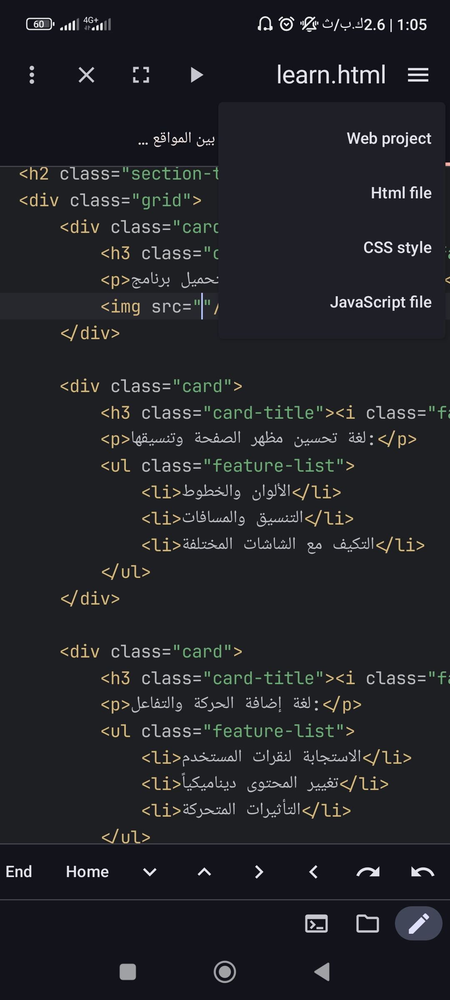

مقدمة
يوجد نوعان رئيسيان لمواقع الويب:
- المواقع البسيطة: صفحات ثابتة لا تتغير محتوياتها إلا بتعديل الكود
- المواقع المتغيرة: صفحات يمكن أن يتغير محتواها تلقائياً حسب المستخدم أو البيانات
مقارنة بين النوعين
| نقطة المقارنة | المواقع البسيطة | المواقع المتغيرة |
|---|---|---|
| طريقة العمل | تعمل بثلاث لغات فقط (HTML, CSS, JS) | تتطلب لغات إضافية للتعامل مع البيانات |
| المحتوى | ثابت لا يتغير | يتغير حسب المستخدم أو البيانات |
| السرعة | أسرع في التحميل | أبطأ قليلاً |
| التكلفة | أقل تكلفة | أعلى تكلفة |
| التحديث | يتطلب تعديل الكود | يمكن التحديث من لوحة تحكم |
مكونات الموقع البسيط
HTML
لغة بناء هيكل الصفحة وعناصرها الأساسية:
- العناوين والنصوص
- الصور والروابط
- الجداول والقوائم
CSS
لغة تحسين مظهر الصفحة وتنسيقها:
- الألوان والخطوط
- التنسيق والمسافات
- التكيف مع الشاشات المختلفة
JavaScript
لغة إضافة الحركة والتفاعل:
- الاستجابة لنقرات المستخدم
- تغيير المحتوى ديناميكياً
- التأثيرات المتحركة
كيفية تشغيل المواقع البسيطة على الهاتف
الخطوة الأولى: تحميل التطبيق
قم بتحميل برنامج WebCode لإنشاء وتحرير مواقع الويب على الهاتف:
كما ترون هنا يمكننا فتح مشاريع تم إنشاؤها سابقاً، لكننا سنركز على إنشاء مشروع جديد من البداية. أما بالنسبة للحواسيب، فيمكنك استخدام برنامج Visual Studio Code وهو من أفضل البرامج للمطورين.
تحميل تطبيق WebCodeالخطوة الثانية: إنشاء ملف HTML
اختر نوع الملف الذي تريد إنشاءه (HTML, CSS, JavaScript):
في هذه الصفحة يمكننا إنشاء ملف HTML الذي يحتوي على هيكل الصفحة باستخدام العلامات (<>). يمكنك وضع كل الكود (HTML, CSS, JavaScript) في ملف واحد لتبسيط العمل للمبتدئين، حيث تضيف التنسيقات داخل <style> والأكواد البرمجية داخل <script>.
تحميل VS Code للحواسيبالخطوة الثالثة: مصادر التعلم
أفضل مصادر لتعلم تطوير المواقع البسيطة:
- موقع W3Schools (أشهر موقع لتعلم البرمجة): اضغط هنا لزيارة الموقع
- قناة Coder Shiyar على اليوتيوب: انقر هنا للزيارة
- دورات مجانية على موقع freeCodeCamp: زيارة الموقع
بعد التعلم يمكنك البدء بإنشاء مواقع ويب احترافية. إذا كنت مهتماً أكثر، يمكنك الانتقال لاحقاً إلى تطوير المواقع المتغيرة. ننصح باستخدام الذكاء الاصطناعي للمساعدة في التطوير، حيث يمكنك طلب إنشاء موقع كامل ثم تعديله حسب احتياجاتك.